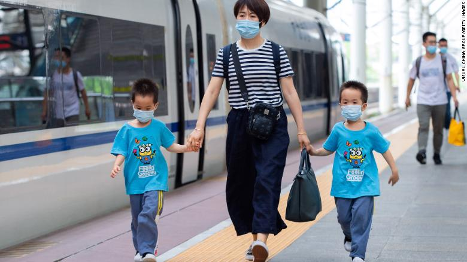

Cristiano Ronaldo scored two goals during his first game back at Manchester United on Saturday against Newcastle United in the Premier League.
The Portuguese superstar rejoined the club from Juventus this summer.
He scored 118 goals in 292 games during his previous six-year stint with Manchester United before leaving for Real Madrid in 2009 for what was then a world record fee.
read more about this
20th anniversary of 9/11
"9/11 is still killing," Sept. 11 first responder and survivor advocate says
"We gave hope to a broken city 20 years ago, and we're paying for it with our lives. And the first 20 years were hard on us. The next 20 years are going to decimate the 9/11 responder community. And I pray that our federal government evolves us with, as we evolve for the worse," Feal told CNN.
read more about this
From the bus stop to after-school activities
here's how kids can help stay safe during this Delta variant surge
"Usually children are picked up incidentally as having (coronavirus). Someone in the family was infected, a friend was infected, so they got a PCR test. And they're found to be positive. ... Then they're fine," Offit said.
read more about this
5 ways to get your kids to wear masks

kids over the age of 2 wear face coverings in indoor public places to help reduce the spread of Covid-19.
We know that little humans pull and tug at the masks constantly, and kids don't just stop there. They let the tops fall beneath their noses and sometimes even yank the things down below their mouths, just because they can.
read more about this
Top Videos Of the Day
Cristiano Ronaldo scores two goals on his return to Manchester United
He CDC analyzed 4,700 hospitalizations among adults between January 24 through July 24 through the COVID-19-Associated Hospitalization Surveillance Network (COVID-NET), which tracks laboratory-confirmed Covid-19 associated hospitalizations in 99 counties in 14 states representing about 10% of the US population.
Editors Note of the Day
As the pandemic spread, the perks of Amirzadeh's job diminished. Now restricted to domestic US flights, her work involves navigating not only the fear of catching Covid-19, but also the recent uptick in disruptive passengers.
read more about this